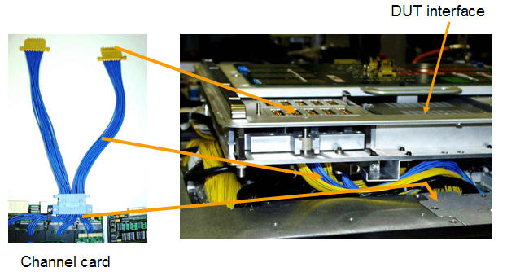
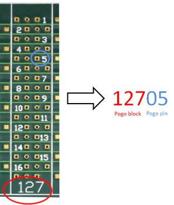

Pogo mapping
The location of channel cards in a test head can vary while the DUT interface uses a fixed position of the pogo blocks. Pogo mapping maps the physical position of a card to one or multiple pogo blocks on the DUT interface. This flexible kind of routing ensures DUT board compatibility across different test head sizes and supports any tester configuration.
Physical position of cards in EXA Scale test heads
A card cage of an EXA Scale test head provides nine channel card slots. The slots of each card cage are configured as follows.
| Test head | Control segment | Card cages | Slot ID used for pogo mapping |
|---|---|---|---|
| CX | 1 | 1 | 101 … 109 |
| SX | 1, 2 | 1, 2 | 101 … 109, 201 … 209 |
| LX | 1, 2, 3 | 1, 2, 3 | 101 … 109, 201 … 209, 301 … 309 |
DUT interface
The DUT interface interface provides maximum 128 pogo blocks for channel cards in eight groups.
Each of the groups provides two more positions for utility pogo blocks and DPS‑slot pogo blocks.
On EXA Scale systems, the DPS‑slot pogo blocks are used for the Internal Utility Power Option or for the utility pogo blocks of an optional second Utility Card.
For more information, refer to DUT interface layout.
Connection between DUT Interface and cards
Pogo cables connect the cards in the card cage slots to pogo blocks on the DUT interface. The figure below shows a part of the cabling.

Mapping the card location to pogo blocks
The CARD_CONFIGURATION section of the tester.model file maps the physical position of a card to the pogo block numbering of the DUT interface. In the legacy model file, mapping is made in the POGOCABLING section.
Assigning DUT signals to pogo pins
The DUT signals are assigned to the pogo pins on the DUT board using a 5-digit numbering scheme. This scheme follows the format XXXYY. Where:
- XXX is the number of the pogo block on the DUT board. Supported physical
pogo block numbers are in the range
- 101 ... 132
- 201 ... 232
- 301 ... 332
- 401 ... 432
SmarTest utilizes also virtual pogo blocks to assign the additional channels of high-density (HD) and very high density (VHD) pogo blocks. An offset of 400, 32, or 432 is to be added for additional channels of HD and VHD blocks.
- YY is the number of the pogo pin on the pogo block. Supported pogo pin numbers are in the range 01 to 16.
The signal-to-pogo pin assignment is configured in the Pin configuration tool.
Example
Example

Functional changes
- Introduced before SmarTest 6.3.2
- SmarTest 7.1.0: Introduced ATH (A test head)